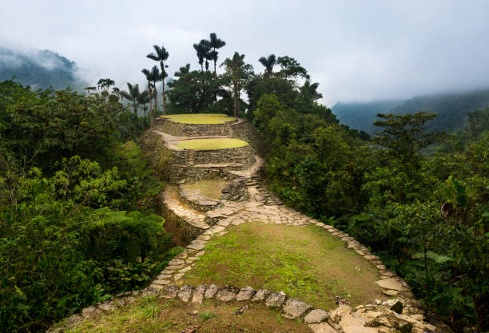
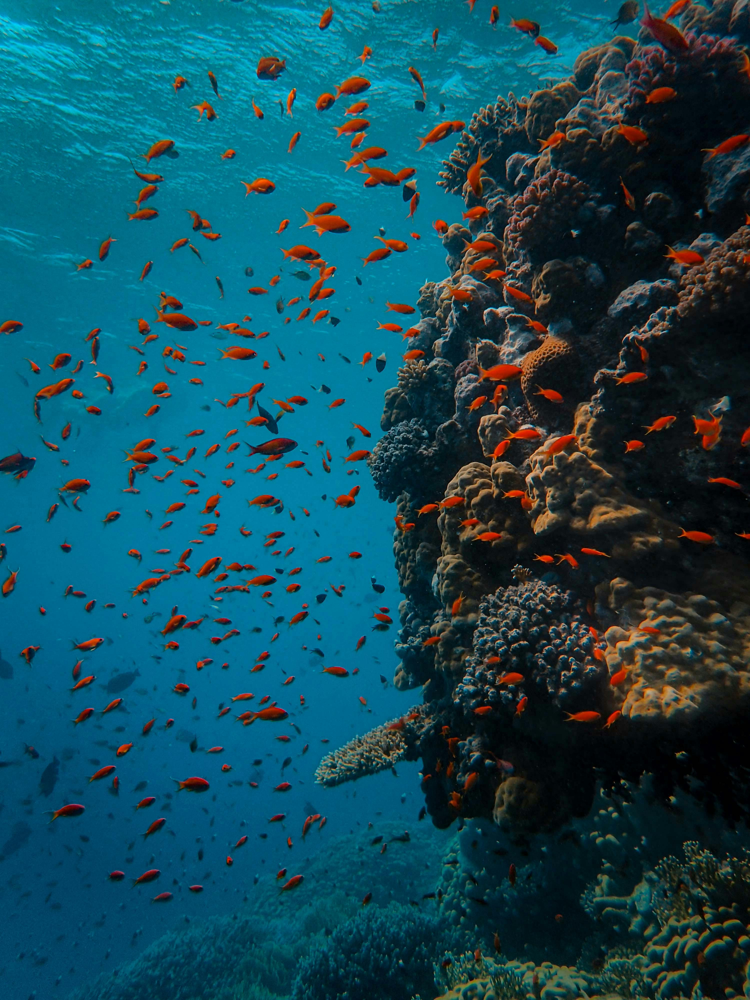
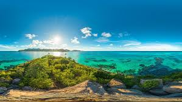

Region del Caribe
La region Caribe de Colombia esta ubicada en el norte de Colombia y limitada por el mar Caribe,
Se divide por 8 departamentos, contiene 11 parques nacionales, contiene con una amplia variedad de Fauna y flora y
lugares increibles para visitar. Estos son los 3 parques mas recomendados de nuestros seguidores.

Nevada de Santa Marta
Es un parque nacional natural protegido, esta entre los departamentos de la Guajira, Magdalena y Cesar.
Esta posee de todos los pisos termicos, desde calido hasta nieves perpetuas. Cuenta con muchas actividades para los turistas
como recorridos, en donde te explicaran y mostraran cada parte de la Sierra Nevada de Santa Marta.

Corales de profundidad
Este es un parque nacional submarino que contiene el 67% de las corales descubiertas en Colombia,
tiene un clima calido, contiene 19 especies de Corales y 115 especies de peces.

Old Providence McBean Lagoon
Ubicado al noroeste de la isla de providencia, en su ecoregion encontramos Bosque humedo tropical,
manglares, arrecifes coralinos. Las actividades que se pueden hacer alli son: Senderismo, Careteo Y Buceo,
Kayac y darse un baño en el mar, perfectos planes para disfrutar en familia.